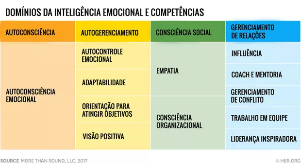

Inteligência emocional é o nome que se dá ao conjunto de competências relacionadas
a lidar com emoções. Mais especificamente, a como (e o quanto) se percebe, processa,
compreende e tem habilidade de gerenciá-las.
Dentre as competências que a IE compreende, estão, por exemplo, as chamadas soft skills,
especialmente conectadas com as características que se “traz” às interações com os outros.
Em sua definição, a dupla Salovey e Mayer explica que IE é “a capacidade de perceber e exprimir
a emoção, assimilá-la ao pensamento, compreender e raciocinar com ela, e saber regulá-la em si
próprio e nos outros”.
O Dr. Augusto Cury nascido em 2 de outubro de 1958 (idade 64 anos), Colina, São Paulo é psiquiatra,
psicoterapeuta, cientista e escritor. Desenvolveu o conceito de inteligência multifocal, uma perspetiva
inovadora do funcionamento da mente e da construção do pensamento. É investigador na área de qualidade de
vida e de desenvolvimento da inteligência, abordando a natureza, a construção e a dinâmica da emoção e dos
pensamentos. Os seus livros ocupam os lugares cimeiros nas listas de livros mais vendidos em todos os países
onde são publicados. É considerado o autor mais lido do Brasil dos últimos anos e um verdadeiro fenómeno editorial,
com mais de 30 milhões de exemplares vendidos em todo o mundo.
Dirige o Instituto Academia de Inteligência, que dá formação a executivos, educadores, médicos, psicólogos,
advogados, universitários e a qualquer pessoa interessada em expandir os horizontes da sua mente, em educar a
sua emoção e em melhorar a sua qualidade de vida.
O Dr. Cury é patrono da Universidade da Criança em Portugal e doutor Honoris Causa da universidade UniFil, assim
como membro de honra da academia de génios do Instituto da Inteligência, no Porto.
Daniel Goleman (1946) é um psicólogo, escritor e jornalista norte-americano, é o autor do Best-seller Inteligência Emocional.
Daniel Goleman nasceu em Stockton, Califórnia, Estados Unidos, no dia 7 de março de 1946.
Foi aluno do Amherst College e na Universidade da Califórnia, em Berkeley.
Recebeu o PhD na Universidade de Harvard onde também lecionou.
Em 1995, tornou-se uma celebridade do mercado editorial com a publicação do livro Inteligência Emocional, que vendeu
5 milhões de cópias, em quarenta idiomas e se tornou um best-seller em vários países.
Segundo Goleman, “Inteligência Emocional” é a capacidade de identificar os nossos próprios sentimentos e o dos
outros, de nos motivarmos e gerirmos os impulsos dentro de nós.
Em 1995, Daniel Goleman já colecionava prestígio no meio acadêmico.
Só que o estrondo em sua carreira aconteceu após o lançamento do best-seller “Inteligência Emocional”.
A obra foi traduzida em 40 idiomas e possuem mais de 5 milhões de cópias espalhadas ao redor do mundo — dessas,
cerca de 400 mil circulam pelo Brasil.
Ele ficou famoso mundialmente ao defender que lidar com as emoções é fundamental para o desenvolvimento de um indivíduo,
pois não há uma loteria genética que predestina vitoriosos e fracassados no jogo da vida.
De modo geral, o comportamento de um indivíduo é guiado pelos sentimentos e valores que ele traz consigo. Logo,
o domínio das próprias emoções permite reconhecer os sentimentos e agir de maneira mais responsável e consciente.
Vamos imaginar uma situação de conflito, devido à discussão de discordância sobre o modo de conduzir um projeto. A
autoconsciência emocional leva a uma reflexão que estabelece limites para sentimentos como tensão e raiva, impedindo
que a exaltação tome proporções irremediáveis.
Ter consciência das próprias emoções é importante, mas não terá efeito para quem não souber controlar seus impulsos a
cada ocorrência. Pedir desculpas após acessos de raiva ou discussões acaloradas pode não fazer mais sentido, sobretudo,
no ambiente de trabalho.
A autorregulação é um dos pilares da inteligência emocional que funciona como um sinal de alerta, freando ações
intempestivas e, muitas vezes, impensadas. Uma ação agressiva de um lado, gera uma reação de outro, que pode trazer
consequências graves.
Um profissional pode ter o emprego dos sonhos, um salário competitivo e benefícios incríveis, mas nunca se sentirá satisfeito
se não for automotivado. A motivação é intrínseca e por mais que uma empresa ou pessoa faça o melhor, não será suficiente se
não exalar de dentro para fora.
Nesse pilar, cada indivíduo deve encontrar as razões pelas quais levanta todos os dias e realizar atividades, pessoais e
profissionais. Assim, ir ao trabalho, à academia ou a uma festa, não pode depender de terceiros, mas sim de uma vontade própria
de realizar algo positivo e satisfatório.
O conceito básico da empatia é de se colocar no lugar do outro e refletir como ele se sentiria diante de uma determinada situação. Um
princípio é não tratar ninguém como não gostaria de ser tratado, logo, um pilar de grande importância para a vida como um todo.
É um consolidado dos pilares anteriores, seja pelo lado positivo ou negativo e seu exercício contínuo faz cair por terra condutas
de julgamentos precipitados e achismos infundados.
Para fechar, o último dos pilares da inteligência emocional é tão importante quanto os demais, diz respeito às habilidades sociais, ou
seja, a capacidade de construir relações saudáveis e duradouras. Quem tem o dom da sociabilidade fará de tudo para que conviver em paz e
harmonia em um ambiente coletivo.
A pessoa hábil socialmente será pacífica, gentil, positiva e prestativa, mesmo quando se sentir irritada ou frustrada por algum motivo. É
como se ela fosse capaz de não se deixar atingir pelas emoções negativas, pensando no bem comum e nas oportunidades de crescimento na vida
e na carreira.
As 12 habilidades que formam a Inteligência Emocional estão divididas dentro destas quatro categorias.
Veja a tabela:

cada uma das quatro categorias se divide em uma série de habilidades e tudo parte da percepção das emoções. A
percepção das emoções é a raiz da inteligência emocional
Ao mesmo tempo, cada competência emocional e social é única e insubstituível. Mas estão todas relacionadas.
Ponto de partida da inteligência emocional. É a capacidade de identificar nossas próprias emoções e os seus
gatilhos. Esta habilidade está totalmente relacionada com a atenção plena e prática de mindfulness.
É a capacidade de manter as emoções e impulsos sob controle em condições de estresse, pressão ou euforia. Uma
vez que você identifica suas emoções, você se torna capaz de gerenciá-las, questionando e desativando seus
gatilhos.
É quando você se desafia para se desenvolver em suas atividades a cada dia superando seus
padrões rumo ao aprimoramento e excelência. Também assume metas desafiadoras e riscos calculados. É o contrário de
estar estagnado.
É capacidade de ver o lado positivo das situações persistindo na busca de seus objetivos apesar dos obstáculos. Emoções
são contagiosas. Ninguém gosta de ficar ao lado de pessoas negativas. Por isso o otimismo é fundamental para os
relacionamentos interpessoais.
É a capacidade de agir com flexibilidade às mudanças, recebendo de forma aberta novas abordagens, ideias ou
situações. Mudanças são socos na cara da nossa zona de conforto.
É a capacidade de se colocar no lugar do outro, identificar os seus interesses e preocupações a fim de extrair pistas
sobre o que ele pode estar sentindo e pensando. Por exemplo: o garçom trouxe um suco errado para você no restaurante?
Tente entender qual situação levou ao erro. Será que ele está sobrecarregado? A filha dele está doente? O erro foi da
cozinha? A empatia é uma das habilidades mais poderosas em relacionamentos interpessoais.
É a capacidade de compreender e assimilar as correntes de um grupo de relacionamentos, identificação os influenciadores,
suas redes e dinâmicas.
É a capacidade de gerar impacto positivo sobre os outros, de persuadir e convencer para obter apoio para suas
iniciativas. Influência está diretamente ligada com capacidade de liderança.
É a capacidade de compartilhar conhecimento, promover a aprendizagem ou o desenvolvimento de longo prazo de outras pessoas
oferecendo feedbacks, suporte e orientações.
Habilidade de ajudar outros pessoas a superar situações emocionais tensas ou estressantes. Para isso, usa-se sensibilidade e
bom senso para encontrar soluções a partir de conciliações, concessões e acordos para os desentendimentos.
É a capacidade de inspirar e contagiar grupos a partir de emoções positivas para extrair o melhor dos outros rumo aos melhores
resultados. A liderança inspiradora se espalha entre as pessoas transmitindo confiança, senso de propósito e unidade.
É capacidade de participar ativamente para o desenvolvimento da equipe e alcance de metas individuais e coletivas. Assim,
compartilha-se responsabilidades e recompensas em relação às metas atingidas.
Muitas habilidades são adquiridas pelos alunos quando a inteligência emocional é desenvolvida no ambiente escolar. Eles
conseguem aplicar seus aprendizados em outros ambientes e tendem a alcançar seus objetivos de forma mais eficiente.
Vale ressaltar que quanto mais puderem experimentar situações diversas e aplicar os pilares da inteligência emocional,
eles estarão mais aptos para interagir no mundo, que cada vez mais demanda o uso da empatia, o trabalho em equipe, o
respeito à diversidade etc.
A seguir citamos alguns benefícios do trabalho com a inteligência emocional na escola com os alunos:
A capacidade de gerir as próprias emoções e de compreender as dos outros pode contribuir para o sucesso
em todas as esferas da vida. A inteligência emocional no mercado de trabalho, em específico, facilita a
gestão de conflitos e o trabalho em equipe e enriquece o perfil profissional, sendo uma característica importante
para a ascensão na carreira.
Veja quais são as razões para desenvolver a inteligência emocional no mercado de trabalho:
uma pessoa que tem um currículo extremamente completo, com diversas qualificações, pode deixar
de ser contratada por uma empresa por falta de inteligência emocional, pois isso pode levá-la a ter
problemas para lidar com situações de estresse e, também, com o restante da equipe.
Em uma escala de 0 a 10, em que nível acha que está a sua inteligência emocional? Para te ajudar a
fazer essa reflexão, confira alguns sinais que mostram que uma pessoa não está sabendo lidar positivamente
com as suas emoções. A intenção é se autoanalisar para buscar a evolução e não para se culpar e se sentir um
fracasso. Lembre-se que quanto mais se conhecer, mais poderá se curar e se potencializar.
O principal sinal que demonstra a falta de inteligência emocional está ligado à capacidade de controlar as próprias emoções. Dessa
forma, uma pessoa que consegue manter um comportamento equilibrado mesmo estando triste ou com raiva, por exemplo, é considerada
como emocionalmente inteligente. Isso é extremamente importante para todos, mas principalmente no caso de líderes, que precisam
passar segurança e estabilidade aos seus liderados.
A empatia é a habilidade de tentar se imaginar na situação das outras pessoas e, assim, agir em relação a elas de
maneira mais compassiva e respeitosa. Dessa forma, aqueles que não conseguem ser empáticos demonstram a ausência de
inteligência emocional, pois se comportam sem considerar que suas ações podem prejudicar alguém. Ter empatia ao agir é algo
extremamente necessário para viver em comunidade e, também, para fortalecer os relacionamentos, sejam eles de ordem pessoal
ou profissional.
Por fim, o último sinal que demonstra a falta de inteligência emocional é não saber respeitar as opiniões que são
diferentes da sua. Afinal, o planeta é habitado por mais de sete bilhões de pessoas e seria ingenuidade querer que todas
pensassem da mesma maneira. Além disso, essa diversidade de ideias e crenças é fantástica, porque permite que um possa aprender
com o outro e se desenvolver cada vez mais.